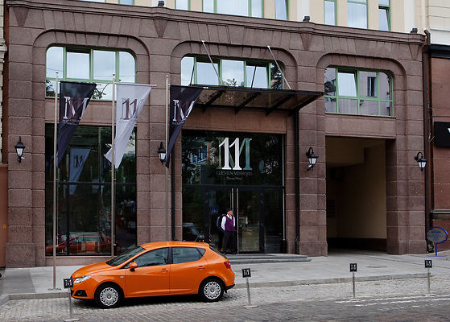
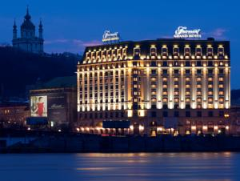
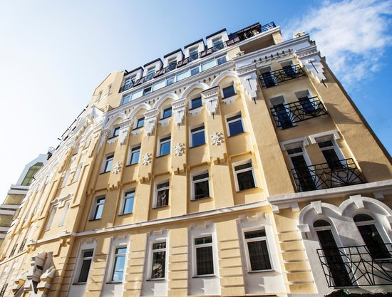
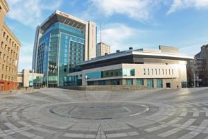
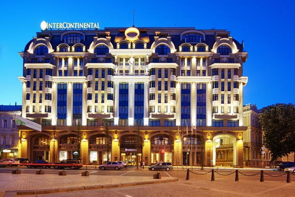

11 Mirrors Design Hotel
Адрес: г. Киев Улица Богдана Хмельницкого, 34А
Контакты: +38(044)581-11-11 | info@11mirrors-hotel.com
«11 Mirrors» – первый и единственный дизайн отель в Украине, расположен в самом центре делового, культурного и исторического Киева, всего в нескольких шагах от Национальной оперы и
Владимирского собора, лучших ресторанов и магазинов города.Дизайн отель «11 Mirrors» создан для тех, кто находится в динамичном ритме жизни, всегда в центре событий и гармонии с собой.
Уникальная атмосфера отеля создана для работы, отдыха и наслаждения жизнью. Все дизайнерские решения отеля направлены на создание баланса красоты и стиля.

Fairmont Grand Hotel
Адрес: г. Киев Улица Набережно-Крещатицкая, 1
Контакты: +38(044)322-88-88, +38(044)322-88-99
Пятизвездочный отель "Фэрмонт Гранд Отель Киев" (Fairmont Grand Hotel Kyiv) расположен в самом сердце исторической части Киева - на Подоле. В инфраструктуру отеля "Фэрмонт Гранд
Отель Киев" входят ресторан, лобби-бар, тренажерный зал, спа-салон, бизнес-центр и подземная паркинг. Конференц-услуги отеля представлены 12 залами, площадью от 20 кв. м до 460 кв.
м. Из них особого внимания заслуживают Атриум c витражным потолком и самый большой в городе бальный зал для грандиозных мероприятий.

Senator Apartmtnts Maidan
Адрес: г. Киев пер. Тараса Шевченко, 8Б
Контакты: +38(044)200-77-88 | maidan@senator-apartments.com
Senator Apartments – первая в Украине сеть профессиональных сервисных апартаментов, поддерживающая единые стандарты качества и уровня обслуживания. Каждый гость Senator
Apartments может рассчитывать на неизменное качество сервиса, предупредительность персонала и неповторимую атмосферу домашнего уюта и комфорта. В то же время, несмотря на
принадлежность к одной сети, каждый комплекс Senator Apartments сохраняет только ему присущую индивидуальность.

Kharkiv Palace Premier Hotel
Адрес: г. Харьков пр. Независимости, 2
Контакты: +38(057)766-44-00 | info@kharkiv-palace.com
Premier Palace Hotel Kharkiv – гранд-отель третьего тысячелетия, объединивший сдержанную роскошь прошлого и ультрасовременный комфорт настоящего. Premier Palace Hotel Kharkiv
расположен в самом сердце города, на огромной центральной площади Харькова. Благодаря своей современной архитектуре он гармонично вписывается в ансамбль площади Свободы и является ее
неотъемлемой частью. Великолепие внешней стилистики отеля не уступает внутреннему содержанию: утонченная классика стала идеальным дополнением функциональности и уюту.

InterContinental
Адрес: г. Киев Улица Большая Житомирская, 2A
Контакты: +38(044)219-19-19 | hotel.kiev@ihg.com
InterContinental Kyiv - Качество и сервис мирового уровня в сердце Киева. Расположенный в уникальном месте, которое сочетает в себе деловой и исторический центр столицы,
InterContinental Kiev дает вам прекрасную возможность насладиться чудесными видами, безупречным сервисом и условиями для проведения конференций в одном из самых роскошных отелей
Киева. Отель является идеальным местом для проведения любых мероприятий: от небольших
совещаний до конференций, эксклюзивных вечеринок и банкетов.
Безнощенко Валентина, 2016г.